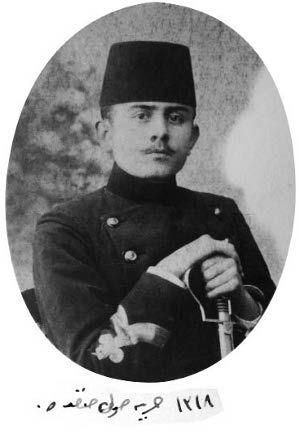

1896’da (1312) on beş yaşıma girmiştim. Fatih Askeri Rüştiyesi üçüncü sınıfında idim. Zeyrek’te Hacıkadın Caddesi’ndeki küçük evimizde otururduk. Babamı küçük yaşta kaybetmiştim. Baba vaziyetine geçen Hamdi ağabeyimin üst katta bir kitap odası vardı. Açık duran kütüphanesinde her çeşitten birçok kitapları bulunurdu. Bazı mahrem arkadaşlarıyla ara sıra baş başa bu odada okurlar ve konuşurlardı. Yakın akrabalarımızdan deniz zabitleri de bulunduğundan aynı meslekten arkadaşları da gelir giderdi. Günün meselesi Ermeni isyanı idi. Geçen yıl 18 Eylül 1895’te (1311) Babıâli’yi basmak arzusuyla gösterişe kalkan Ermeniler hayli hırpalanmalarına rağmen şimdi de Galata’daki Osmanlı Bankası’nı basmışlar ve işgale muvaffak olmuşlardı. 26 Ağustos 1896 (1312) günü silah seslerini evden duyuyorduk. Fakat beni bu silah seslerinden ziyade ağabeyimin arkadaşlarıyla gizli gizli fısıldaştıkları sözler meraklandırıyordu.
Ermenilerin üst üste yaptıkları bu isyanlardan maksatlarının ne olduğu hakkında sağdan soldan işittiklerimiz, “Ermeniler beylik istiyormuş”tan ibaretti. Halbuki ben daha küçük yaşlarımda Van’da, Harput’ta yıllarca oturmuş ve Trabzon, Erzurum, Sivas, Samsun ve aralarındaki yerleri, kasabaları görmüştüm. Ermenilerden komşularımız da vardı. Van’da aşçımız bile Ermeni idi. Hiç böyle bir şey istediklerini işitmemiştim. Ermenilerin nerelerde beylik yapacaklarına aklım hiç ermemişti. Çünkü hiçbir yerde buna elverişli bir Ermeni topluluğu görmemiş ve işitmemiştim. Bunun için bu yıl daha çok aklım ererek bu işi merak etmiştim.
Ağabeyimin misafirlerine hizmet vazifesi evin en küçüğü olduğumdan benim üzerimde idi. Girip çıktıkça duyabildiğim sözler büsbütün beni meraklandırmıştı. Bir aralık dışarı çıkan ağabeyime sordum:
— Ermeniler nerede beylik yapacakmış? Ya biz ne yapacağız?
— Önce oku, adam ol. Sonra nerede ne yapılacak ve biz ne yapacağız öğrenirsin, diyerek ağabeyim lafı kesti ve beni başından savarak arkadaşlarının yanına gitti.
***
Ertesi günü ağabeyim evde yok iken kütüphanesinin başına geçtim:
— Herhalde adam olmak için fazla kitap karıştırmak icap eder, diyerek alt gözden başlayıp ağabeyimin kitaplarını sırasıyla karıştırmaya başladım: Cevdet Tarihi, Tarih-i Ata... derken arkalarından sarih birtakım gazeteler döküldü. Ben bir taraftan kendi kendime söyleniyordum:
— Önce oku adam ol!.. Önce oku adam ol!..
Ben aklımca ağabeyimin tarih kitaplarını sırasıyla okuyacaktım. Fakat önüme dökülen gazeteler daha çok merakımı çekti: Avrupa’dan gelmiş bir sürü Meşveret ve Mizan gazeteleri. Ahmet Rıza ve Mehmet Murat imzalarıyla neler yazılmamış: Abdülhamid’in bir kanlı katil olduğu, bu zalim herif ortadan kalkmadıkça milletin mahvolacağı, Meşrutiyet idaresinin kurulmasıyla hürriyet teessüs etmedikçe vatanın tehlikede bulunduğu, sayısı on sekiz bini aşan İttihat ve Terakki Cemiyeti’nin bunu başaracağı...
— Ay ne lezzetli şeylermiş bunlar, dedim.
Gazeteler İttihat ve Terakki Cemiyeti’nin vasıta-i neşriyatı klişesini de taşıyor. Okudukça neler öğreniyordum: Milletin fedakâr ve münevver gençleri çöllere sürülüyormuş, boğuluyor, denize atılıyormuş. Milletin parasını hafiyeler ve saray halkı yiyormuş. Avrupa terakki ederken cahil ve katil padişah milletimizin her türlü terakkisine engel oluyormuş. Memleketimizde ilme ve emeğe hürmet yerine yalan, riya ve irtikap hâkim imiş. Haksızlık, zulüm, israf, sefahat saraylarda ve büyük yerlerde kökleşmiş, halk fakir ve benliğinden mahrum bir halde müstemleke halkı gibi imiş. Medeni milletlerin meclisleri beş paranın bile hesabını hükümetlerinden sorarken ve milletten alınan paraları millet hayrına sarf ederken bizim padişahlar fakir halkımızı soyarak milyonlarla altınları saray yapmak, cariye almak, dalkavuk ve hafiye beslemek gibi murdarlıklarda harcediyormuş; hülasa işler böyle giderse mahvımız muhakkakmış!
Sultan Hamid’in babama ve dolayısıyla bütün ailemize karşı yaptırdığı haksız sürgün cezasından dolayı ona karşı zaten pek küçükten bir nefretim vardı.[4] Bunun için okudukça kin ve nefret duygularım çoğaldı.
— Meğerse ben ne cahil imişim, dedim.
Tevekkeli değil ağabeyim:
— Önce oku, adam ol, demedi!
Ben ne kadar vakit geçtiğini dalgınlıkla hesap edemedim. Merdivenden yukarı çıkan ayak seslerini de fark edememişim. Kapının açılmasıyla beraber ağabeyimin parlayan gözlüğü gözlerimi kamaştırdı. Ağabeyim beni cürm-i meşhut halinde yakalamıştı. Çevik davranarak dedim:
— Hey, ağabey! İşte ben önce okudum, adam oldum. Söyle bakayım şimdi ne yapayım?
Kardeşlerimin arasında en çok takdir ettiği beni güler yüzle karşıladı:
— Bunları ne karıştırdın? Sen bunlardan evvel tarih oku! Daha bunlardan çok şey anlayamazsın. Sonra bu gibi şeyleri ötede beride söylersen hafiyeler duyar, çocuk demezler insanı zindanlarda çürütürler, bütün ailemizi de mahvedersin. Yemin et bakayım! Ne bu gazetelerin adını bir yerde anacaksın, ne de içinden bir şeyini! Anladın mı?
— Vallahi billahi kimseye, kardeşlerime bile söylemem. Fakat şu Ermeniler nerede ve nasıl beylik yapacaklar? Bir de bu gazeteler bizim de İttihat ve Terakki komitesinden bahsediyor. Bunlar neye Ermenilerden evvel davranmıyor?
— Kâzım! Ailemizin namını yükseltecek istidadı yalnız sende görüyorum. Fakat kendini çok koru. Ahlakını nasıl muhafaza ediyorsan dilini de öyle tut! Okuyup adam olduktan sonra her şeyi anlarsın ve o zaman sen de vatana karşı borçlu olduğun vazifelerini yaparsın. Daha çocuksun. Derslerinden başka işlere karışma. Yalnız fikrinin açılması için kütüphaneden çıkardığın tarihleri boş kaldıkça oku.
Benim bugünkü okuduklarımı ve dinlediklerimi iyi hazmedemediğimi görünce biraz Fransız İnkılabı’ndan bahis açtı. Sonra da Avrupa hükümdarlarının yüksek tahsil görmüş, yüksek seciyeli insanlar olduğunu, işlerini de milletin serbest intihabıyla seçtikleri mebuslarının kontrol ettiklerini, bizde ise padişahların hem cahil hem de saraylarında israf ve sefahat içinde tereddi etmiş kimseler olduğunu ve akıllarına geleni etraflarındaki dalkavuklarla yapmakta olduklarını anlattı. İşte vaktiyle Avrupa da bizim gibi imiş, milletler ihtilaller yaparak işi ellerine almışlar. Hükümdarlık makamında dahi cahil ve sefih kimseyi bulundurmamışlardır. Elbet bizim milletimizin genç evlatları da bunu bir gün yapacak ve vatanı mahvolmaktan ve milleti esir düşmekten kurtaracaktır, dedi.
Ben bugünkü kazancımdan çok seviniyordum. Yalnız aklıma bir şey saplanmıştı. Ermeni komiteleri gibi bizim de İttihat ve Terakki komitemiz varmış da neden sesleri çıkmıyor? Ağabeyime sordum:
— Anlattıklarına çok teşekkür, fakat şu İttihat ve Terakki komitemiz nerede, neden onların da Ermenilerin yaptıkları gibi sesleri çıkmıyor?
— Her yerde, her aklı eren seciyeli vatandaş İttihat ve Terakki’dendir. Fakat daha henüz padişahın hafiyeleri daha kuvvetli. Haber aldıklarını öldürüyorlar, boğuyorlar yahut da zindanlarda, çöllerde çürütüyorlar.
— Peki her aklı eren seciyeli vatandaş İttihat ve Terakki komitesinden ise biz de onlardan mıyız?
Kâzım her şeyin dibine darı ekersin, bilirim.[5] Ama bu işin dibine darı ekilecek toprak bile bırakmadın! Sen daha çocuksun. Ancak beline kılıç taktıktan sonra bu işlere karışmaya hakkın olur. Şimdi vazifen derslerine çalışmak ve burada benim odamda yalnız tarih okumak! Anlıyor musun? Bir daha söz ver bakayım, hiçbir yerde bu gazetelerden ve konuştuklarımızdan bahsetmeyeceksin ya?
Tüylerim dimdik olmuştu. Ben kendimi hiç de çocuk sanmıyordum. On beş yaşıma henüz basmakla beraber evimizin her masrafını ben görüyordum, evi ben idare ediyordum. Askeri Rüştiye’nin son sınıfında idim. Dershanede çavuş, teneffüslerde de nezaretçi olarak dahiliye zabitlerimize bile vekâlet ediyordum. Bütün bu mevkileri kafamda şimşek hızıyla canlanarak bana şunları söyletti:
— Mektepte ve evde bütün işleri görürken koca adam oldun, diyorlar ya! Ne olur şu İttihat ve Terakki’ye de alıversinler!
Ağabeyim gülerek şu cevabı verdi:
— Yirmi yaşından önce askere almadıkları gibi bu cemiyete de almazlar! Bundan başka bu cemiyete kayıt muamelesinin nerede yapıldığını da bilmiyorum. Sen dediğim gibi beline kılıç takıncaya kadar ağzına cemiyetin adını alma! Sonra hepimize yazık olur. Şimdi bana tekrar söz ver bakayım kardeşlerine bile bu gazetelerden ve cemiyetten filan bahsetmeyeceksin, değil mi?
Yeminle sözümü tekit ettim. O da bana, gelen gazeteleri okumaya müsaade etti ve şunları anlattı:
“Ahmet Rıza ve Mehmet Murat beyler Abdülhamid’e ıslahat için layihalar verdiklerinden padişah kızmış, onları mahvetmek istemiş, onlar da Avrupa’ya kaçmışlar ve oradan fikirlerini serbest neşrederek memleket içinde fikir sahibi insanlar yetiştirmeye çalışıyorlar ve Sultan Hamid’in istibdadı ile mücadele ediyorlarmış. Murat Bey Mülkiye Mektebi’nde okurken tarih hocaları imiş. O zaman İstanbul’da Mizan gazetesini çıkarıyormuş. Çok kıymetli ve hür fikirli bir adammış.”
Günler geçtiği halde ara sıra gazete gelmekten başka ses seda duyulmuyordu. Gelen gazetelerde de İstanbul’da ve Edirne’de bazı evlerin basıldığı ve zabit, doktor, hoca, memur birtakım hür fikirli vatandaşların sürgüne gönderildiği uzun uzadıya yazılıyor ve Sultan Hamid hakkında ağır sözler sarf olunuyordu. Mithat Paşa ve Damat Mahmut Paşa’nın Sultan Hamid’in emriyle Taif’te şehit edildikleri hakkında cemiyetin eserler de yazdığı ilan olunuyordu. Ağabeyimle hasbıhallerimde, cemiyet sözü üzerinde durmamak şartıyla, her şey görüşebiliyordum.
Fatih Askeri Rüştiyesi’nden sınıfımın en ilerilerinde olarak muvaffakıyetle şahadetnamemi aldım. Kuleli Askeri İdadisi’ne de (Lise) açılan müsabakada muvaffak olarak kardeşimle beraber girdik (10 Nisan 1897/29 Mart 1313).
Benden dört yaş kadar büyük olmasına rağmen kitaplarla benim kadar başı hoş olmayan kardeşim Hulusi ile aynı sınıftandık. Ağabeyim ve yakın arkadaşları biz iki kardeşe biraz nasihat verdiler.
Sultan Hamid günden güne vehme saplanarak zulmünü arttırıyormuş. Mektep talebesinin bile hürriyet davasında bulunan gazeteleri okudukları ve cemiyetlere girdikleri hakkında jurnaller aldığından mektep çocukları arasından bile hafiyeler kullanıyormuş. Kuleli’den ve Harbiye’den bazı efendiler tart olunarak Fizan’a sürülmüş. Para ve nişan alacağız diye bazı sütü bozuklar arkadaşlarının ceplerine Avrupa’dan ve Mısır’dan gelen bu kabil gazeteleri koyuyorlar, sonra da zabitlerine haber vererek namussuzluk ediyorlarmış. Hafiyelik hem çok artmış, hem de namussuzca hareketleri pek ileri gitmiş. Dükkânlara bile girip paketlerin arasına evrak-ı muzırra adını verdikleri gazete vesaire koyarak jurnal ediyorlarmış.
“Bunun için sık sık ceplerinize, yatak ve yastık altlarına bakınız, rastgele kimselerle konuşmayın, derslerinizden başka şeylerle katiyen uğraşmayın. Kaputların ceplerini dikseniz daha hayırlı olur.”
Harbiye Mektebi üçüncü sınıftan Kandiyeli Hayrettin ve diğer bir arkadaşı Harbiye’deki cemiyet teşkilatına girmişler, sonra da haber vermişler. Birçok talebe Taşkışla’ya hapsedilmiş. Bizim mektepten de makine muallimi Tavşan Kâmil tevkif edilerek götürülmüş.
Ayrıca Hamdi ağabeyimin sıkı tembihleri ve hususiyle, Avrupa’dan gelen gazeteler hakkında hiçbir arkadaşımla görüşmemek hakkındaki nasihatlere ben çok ehemmiyet vermiştim. Söylemek değil, kimseyi dinlemiyordum bile.
5 Nisan 1313’te (Harp ilanı 7 Nisan’dır) Yunanlılarla harp başladı. Ve 6 Mayıs’ta da çabucak zaferle bitti, izinli çıktığımız günler büyük sevinçlerle zafer ilavelerini alır okurduk.
Ben Alemdar Ordusu’nu, Tarih-i Ata’dan defalarca okuyarak ezberlemiş gibi olduğumdan dimağımda sabit bir iz bırakmıştı, İttihat ve Terakki Cemiyeti’ni de gözümde pek büyütmüş olduğumdan bu iki tesir altında kalarak sanıyordum ki Yunanlıları mağlup ederek Tesalya’yı işgal etmiş bulunan ordumuz da yakında İstanbul’a yürür ve istibdadı ortadan kaldırır.
Hafta izinlerimizde ağabeyimden böyle bir havadis almak için sabırsızlık ederdim. Fakat işler benim düşündüğüm gibi çıkmadı.
Perşembe akşamı eve geldiğim vakit ağabeyimi de pek kederli ve düşünceli buldum. Heyecanla boynuna atıldım ve teessürünün sebebini sordum. Şu cevabı aldım:
— Kâzım! Bazı alçakların şimdiye kadar ne facialara sebep olduklarını birkaç kere sana anlatmıştım. İşte yine, hem de daha geniş mikyasta facialar oluyor. Birçok kimse sürgün ediliyor. Tıbbiye ve Harbiye mekteplerinden aylardan beri mevkuf bulunan birçok talebe ve zabitleri Taşkışla’da Divan-ı Harp adını taşıyan Sultan Hamid’in cellatları biçarelerin idamına kadar yürüyecekmiş.[6] Yine padişahın haydut çetesi işe hâkim oldu. Zavallı İttihat ve Terakki Cemiyeti’ni perişan ediyorlar. On yıllık emekler, hepsi mahvoldu.
Ben şaşırıp kaldım. Neden Ermeniler gibi bizimkilerin de silah patlatmadıklarını ağabeyime sordum. Şu cevabı aldım:
— Ermeniler icraata geçinceye kadar işlerini gizleyebiliyorlar. Bizim içimizde nenin nesi olduğu belli olmayan sütü bozuklar çok da ondan. Sultan Hamid bu gibileri bol para ile köpek gibi kullanıyor. Memlekette ne kadar rezil, namussuz varsa onun hafiye teşkilatında. Bu alçakların bugün yarın bizim evi basmaları da muhtemeldir. Bugün sana her şeyi söylemek mecburiyetindeyim. Metin ol, böyle bir felâket başımıza gelirse sükûnetini bozma, evi idare ve teselli et!
Gözlerimi ve kulaklarımı açarak dikkat kesilerek dinliyordum. Ağabeyim bana şu sırları tevdi etti:
— Mademki saray her şeyi haber almıştır. Mademki arkadaşların bile çok şeyler haber almaktadırlar. Senin de her şeyi bilmekliğinde hiç beis görmüyorum. Esasen artık işi bilmen ve kavraman da lazımdır.
Ağabeyim bugün bana bu kadar açık başladığı beyanatının hikmetini de söyledi.
Mensup olduğu cemiyet kolu dahi basılmış, reisleri ve daha bazı kimseler tevkif olunmuş, birçok evrakı da müsadere etmişler. Şu halde artık kendi hüviyetini gizlemek imkânı da kalmamış. Verdiği malumatın hülasası şunlardı: Mülkiye’den 1305’te mezun olan en büyük ağabeyim İttihad-ı Osmanî Cemiyeti’ne 1892’de (1308) Küçükmustafapaşa’da otururken girmiş. 121. şubenin 11. numarasını haizdir (121/11). Rehberi komşularımızdan Bahriye Zabiti Alâettin Bey’miş.[7] Şubeler üçer kişi imiş. Üçüncü arkadaşları yine Bahriye Zabiti Hakkı Bey’miş.[8] Cemiyet 1894’te (1310) İttihat ve Terakki adını aldıktan sonra kol kol teşkilatını büyütmüş.
Cemiyetin maksadı meşrutiyete yemin verdiği halde sözünde durmayarak keyfi idare ile milleti felâkete sürükleyen Sultan Hamid’i indirerek Veliaht Reşat Efendi’yi geçirmekmiş. Yunanistan’a karşı zaferle biten bir harbin sonunda bu işi yapmaya karar verilmiş. Eğer muvaffak olunsa imiş, bir çıbanın cerahati gibi saray etrafında toplanmış bulunan mütereddi unsur temizlenecek ve yeni bir seçme muhitle Sultan Reşat meşrutiyet-i idareye başlayacakmış. Fakat gerek Avrupa’daki ve gerekse İstanbul’daki cemiyetin faaliyetlerini Sultan Hamid de hafiyeleri vasıtasıyla bir düziye takip etmekte olduğundan cemiyet icraata kalkmadan önce, ona müthiş bir darbe vurabilmiş. Ağabeyim bu darbeden kendisinin kurtulacağını hiç ümit etmiyordu. Çünkü mensup olduğu Aksaray şubesinin merkezi olan Oğlanlar Tekkesi basılmış ve bu şubenin reisi olan zat da tevkif olunmuş.
On sekiz bin azası olduğu ilan olunan İttihat ve Terakki Cemiyeti’nin hiçbir ses çıkarmadan bu suretle boğulmasına aklım ermemekle beraber çok acıdım. Ağabeyime de bir fenalık gelmesi ihtimalinden ise çok korktum.
***
Ne ise fırtına bizim eve dokunmadı. Merkezlerinde evrakı yakmak dirayetini gösterenler hafiyelerin eline bütün teşkilatın geçmesine mâni olabilmişler. Bazı kimseler de Avrupa’ya kaçabilmiş. Yalnız ileri gelenlerin tevkif olunması, sonra da sürgüne gönderilmesi ağabeyimin kolunun cemiyetle bir müddet irtibatının kesilmesine sebep oldu.
Aradan çok zaman geçmeden Hoca Osman Efendi adında biri bize gelip gitmeye başladı. Bu zat ağabeyimin Tapu Dairesi’nde kalem arkadaşı imiş. Bunun gelip gitmesiyle yine Avrupa’dan gazeteler gelmeye başladı. Meğer bu Hoca Osman Efendi vasıtasıyla ağabeyimin kolu başka bir şube ile irtibat yapmış.
Bu işe ben daha çok sevindim. Çünkü hem büyük fırtınadan kurtulmuştuk, hem de hafta izinlerimde büyük bir zevk ve heyecanla okuduğum gazeteler yine geliyordu.
Yunanistan’daki muzaffer ordumuzdan da hiçbir ses çıkmamıştı. Tesalya’nın Yunanlılara geri verileceği meselesi acaba orduda bir galeyan uyandırır da İstanbul üzerine yürür mü diye düşüncemi ağabeyim çocukça buluyordu. Çünkü Harbiye ve Tıbbiye mekteplerinde ve halk arasındaki cemiyet teşkilatını yine cemiyete girmiş bazı alçakların Sultan Hamid’e haber verdiği artık öğrenilmişti. Şu halde ordunun içinde de bu kabil kimselerin eksik olmayacağı ve bu gidişle daha uzun müddet bir iş yapılamayacağı kanaatinde idi. Gelen Mizan gazetelerinde Taşkışla mezalimi ve Nadir adında birinin hafiyelik ettiği hakkında hayli malumat vardı. Sonraları tekrar okuduğum bu nüsha 26 Haziran 1897 tarihli idi. “İkinci Bastil” başlığı altında şunları yazıyordu:
“Yeni bir darü’l-mezalim daha açıldı: Mehterhaneler, zaptiye kapıları, Hasanpaşa ve Yıldız işkencehaneleri, hatta Marmara açıkları Hamid’in layıkıyla âlât-ı seyyiat ve istibdadı olamıyor. Bu kabilden Taşkışla politika müttehemleri için mahbes intihap edilerek orada bir divan-ı harb-i daimi teşkil edildi... Mahsusen inşa edilmiş dar localarda günlerce ayak üzerinde durdurmak, kuru ekmekten maada bir şey vermemek, günde dört defa sopa ile dövmek bu mezalimhanenin en adi icraatındandır.
Ey pençe-i istibdad altında kıvranan civanmerd millet! Başınızı kaldırınız, gözlerinizin önünde ceryan eden vukuata nasb-ı nazar-ı dikkat ediniz...
Daha yirmi sene evvel İttihad-ı Osmanî’de bulunan Bulgarlar bugün darülfünunlar, darü’l-terbiyeler, kütüphaneler inşa ediyorlar...”
Aynı gazetede bu satırlardan sonra bir fotoğraf ve altında:
“Casus-ı bînamus Nadir habîsi.”
Bunun altında da şu satırlar görülüyordu:
“Bir buçuk sene evvel ilan-ı harp edercesine bir şiddetle izhar ederek mülkün her tarafını bir mezbahaya çevirdiği zaman Nadir de her hamiyetli Osmanlının yaptığı gibi fırkamıza dehalet etmişti... Sonra casusluk etti. Şimdi ağlayarak diyormuş ki:
‘Ah ben ne yaptım!... Ne yaptım!... Ferik İsmail gibi bir habîsin iğfalâtına aldandım da arkadaşlarıma, vazifeme, yeminime hıyanet ettim!’
Aldanmak mı? Biz bu aldanmaya aldanmayız...”
Resimden ve adından Nadir’in kim olduğunu ağabeyim tanıdı. Zaten de bu mesele cemiyet efradı arasında da şayi olmuş. Şöyle ki:
Numune-i Terakki Mektebi’nin müdürü olan Nadir Bey Beyoğlu’nda Tokatlıyan Gazinosu’nda Askeri Mektepler Müfettişi İsmail Paşa ve bunun eniştesi Mazhar Bey’le otururken arkadaşı olan Mazhar Bey’i cemiyete almak istemiş! Muhavereyi işiten İsmail Paşa da Mazhar Bey’e bu teklifi kabul etmesini söylemiş! Mazhar Bey de kabul eder görünmüş. Nadir Bey de İttihat ve Terakki Cemiyeti’nden ve bunun hal kararının yakın olduğundan bahsetmiş ve birkaç isim de bildirmiş!... Gazinodan çıkınca İsmail Paşa ve Mazhar Bey; Nadir Bey’i mabeyne götürmüşler. Padişahın huzuruna çıkarılmış. Sorulan şeylere karşı bildiği şeylerin hepsini söylemek alçaklığını yapmış. Bunun üzerine gerek Nadir Bey’in evinde ve gerekse ortaya attığı kimselerin evlerinde araştırmalar yapılmış ve bu suretle yeniden birtakım kimselerin adı ortaya çıkmış.

Kâzım Karabekir (Zeyrek). Harbiye son sınıf, 1902
Hepsi tevkif olunmuş. Nadir Bey de ihanetine mükâfat olarak nişanlara ve ihsanlara gark olunmuş, İsmail Paşa ve Mazhar Bey de Sultan Hamid’in daha çok gözüne girmişler ve büyük mükâfatlar almışlar.
***
Her gazetesini okuyuşumda Murat Bey’i, kafamda büyük bir vatanperver gibi daima büyüttüm. Ağabeyim de onu çok sena ederdi. Onun Turfanda mı Yoksa Turfa mı adlı romanını büyük bir şevk ve takdirle okumuştum. Fakat “Casus-ı bînamus Nadir habîsi” yazısıyla Nadir’in resmini ve mahiyetini ilan ettiği gazetesini okuduğumdan bir hafta sonra mektep arkadaşlarımdan biri gizlice kulağıma fısıldadı:
— Avrupa’ya kaçmış olan Murat Bey İstanbul’a gelmiş!
Bunu söyleyen samimi arkadaşıma önce inanmadım. O doğruluğunu, görenlerin şahadetiyle de temin edince kulaklarıma inanmadım.
Hafta iznimde bu acı havadisi ağabeyime yetiştirdim. O da dudaklarını bükerek dedi:
— Ben de duydum, inanmadım. Fakat dün kendisine Bonmarşe’de[9] rast geldim. Hocamızdı. Bana büyük teveccühü vardı ve beni pek iyi tanırdı. Bu sefer beni görünce başını çevirdi. Arkasından iki hafiyenin onu takip ettiğini görünce bu hareketini hoş gördüm.
Yeniden bazı tevkifler başladı. Ve İttihat ve Terakki Cemiyeti de son darbeyi yiyerek husufa uğradı. Artık Avrupa’dan da bize gazeteler gelmez oldu. (Keşke bu Avrupa’ya kaçma modası çıkmasaydı da birçok gençler onların çıkardıkları bir sürü lüzumlu lüzumsuz neşriyat yüzünden mahvolmasalardı. Ve yine bu tarzdaki neşriyatla Avrupa siyasetçilerinin de ekmeklerine yağ sürmeselerdi. Bu husustaki mütalaamı Manastır’da yeniden gizli bir cemiyet kurulmak ihtiyacı sırasında zikrettim.)